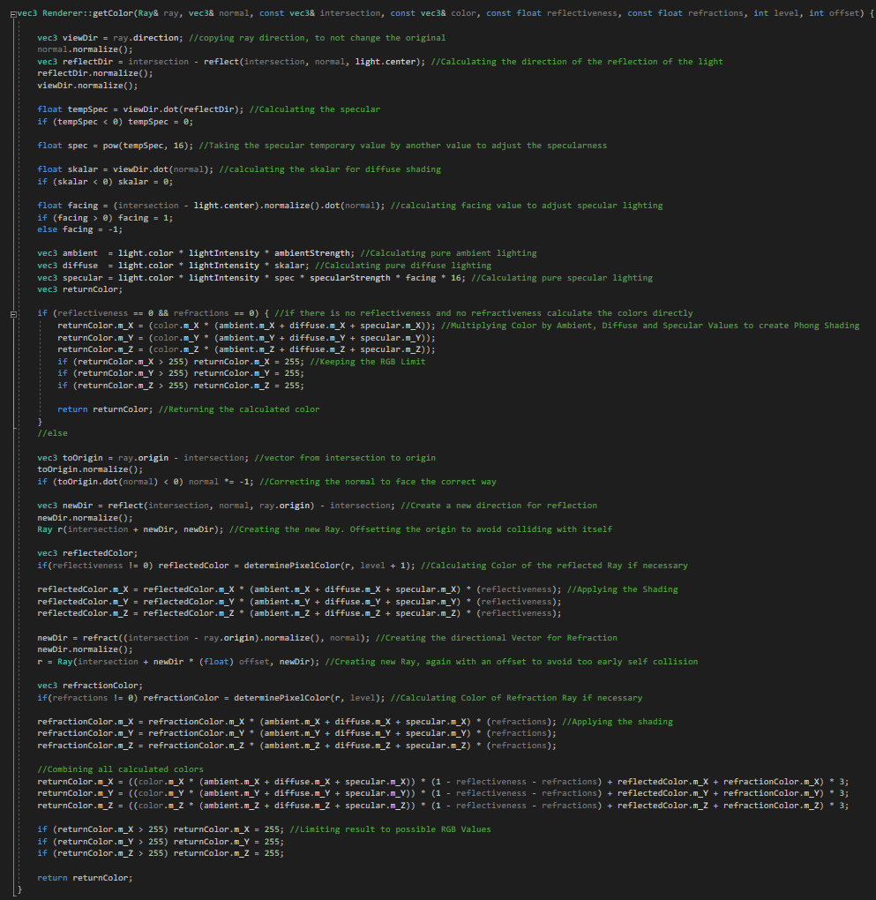

What was the project?
The Ray Tracer was a project we had to do during the first year at university. We had to create it from scratch in C++. It is not real time, but I am quite happy with the results it produced. Some of which you can see above.
I worked on it alone.
I created the Renderer from scratch in C++. The Ray Tracer supports reflections, refractions, multiple, colored light sources, phong shading, spheres, planes, cuboids and shadows.
I learned what "Ray Tracing" is and how it works and also how difficult it is to create an efficient system with it. This project was also a great refresher on linear algebra and how to work with rays and vectors.
How does it work?
For every pixel, I calculate a ray from the camera through the pixel. I then check for intersecition and try getting the color of the object I intersected this is the function you see below. If the object has reflections or refractions enabled, I create a new ray and mix the color of the object and the color of what the new ray returns according to the reflection/refraction strength.
